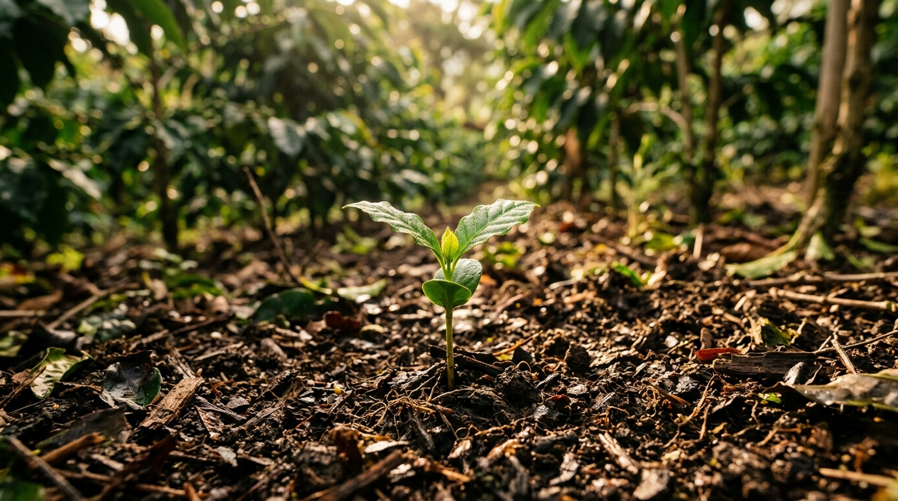

Dari Biji Kecil Menjadi Pohon Rindang: Awal Mula Perjalanan Kopi

Halo, para pencinta kopi! Pernahkah Anda bertanya-tanya bagaimana perjalanan panjang biji kopi hingga bisa menjadi minuman nikmat di cangkir Anda? Semuanya dimulai dari sebuah proses yang tak kalah menariknya, yaitu di sektor hulu: pembibitan dan budidaya.
Memilih Bibit Unggul
Perjalanan kopi dimulai dari pemilihan varietas yang tepat. Petani kopi harus cermat memilih bibit yang sesuai dengan kondisi geografis dan iklim setempat. Di Indonesia, dua varietas utama yang mendominasi adalah Arabika dan Robusta, masing-masing dengan karakteristik dan kebutuhan tumbuh yang berbeda.
Proses pembibitan sendiri tidaklah sederhana. Di perkebunan kopi modern, pembibitan dilakukan dengan sistem vegetatif, seperti stek sambung dan sambung stek. Metode ini dipilih untuk menghasilkan bibit yang tahan terhadap hama dan penyakit. "Proses awalnya kita membuat batang bawah yaitu kita pilih yang tahan terhadap hama penyakit. Kalau sudah disambung baru kemudian diberi perangsang akar," ungkap Agus Haryanto dari Perkebunan Kopi Tugu Kawisari.
Setelah bibit disiapkan, proses selanjutnya adalah pengakaran. Bibit tanaman kopi ditutup dengan sungkup dan baru dibuka pada bulan ke-3 atau ke-4, setelah akar-akarnya dianggap cukup kuat untuk dipindahkan ke lahan yang lebih luas. Pada tahap ini, tanaman kopi juga dievaluasi berdasarkan bentuk daun, batang, dan ciri-ciri fisik lainnya sebelum akhirnya ditanam.
Menunggu Panen dengan Kesabaran
Tanaman kopi bukanlah tanaman yang bisa berbuah dalam waktu singkat. Pohon kopi membutuhkan waktu pertumbuhan yang sangat lama, sekitar 4 hingga 6 tahun untuk mulai produktif dan menghasilkan buah ceri yang siap dipanen. Selama masa pertumbuhan ini, tanaman kopi memerlukan curah hujan yang tepat, sinar matahari yang cukup, serta pengamatan rutin untuk memastikan pertumbuhan yang maksimal.
Tantangan di Sektor Hulu
Sektor hulu atau budidaya merupakan fondasi dari keseluruhan industri kopi. Sayangnya, sektor ini juga menghadapi berbagai tantangan. Pakar IPB menyebutkan beberapa masalah seperti rendahnya produktivitas, lambatnya peremajaan tanaman di beberapa daerah, kelangkaan Sumber Daya Manusia (SDM) muda, hingga dampak perubahan iklim yang signifikan terhadap penurunan produksi kopi nasional. Bahkan, minat generasi muda untuk terjun di sektor hulu masih sangat kurang, mereka lebih memilih bekerja di sektor hilir.
Padahal, kualitas cita rasa kopi sebenarnya sudah dapat ditentukan sejak proses di hulu, saat masih di tangan petani. Konsep ini berbeda dengan pemikiran terdahulu yang menganggap cita rasa kopi baru ditentukan di hilir, saat biji telah di-roasting dan di tangan barista.
Memahami proses panjang di sektor hulu ini akan membuat kita semakin menghargai setiap tegukan kopi yang kita nikmati. Karena di balik secangkir kopi, ada kerja keras dan kesabaran para petani yang merawat tanamannya selama bertahun-tahun.